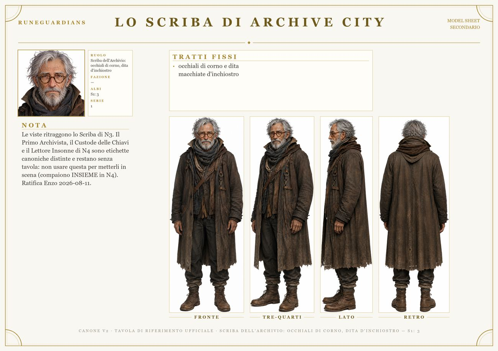
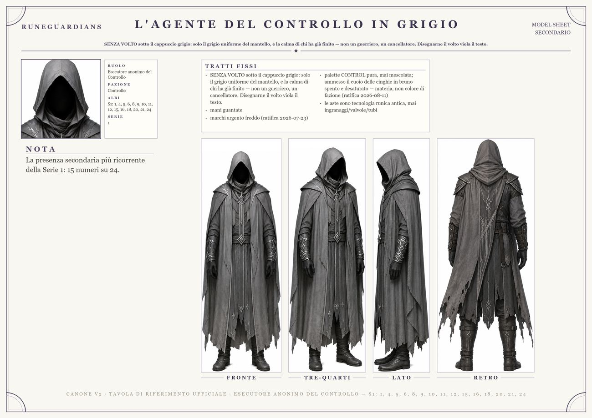
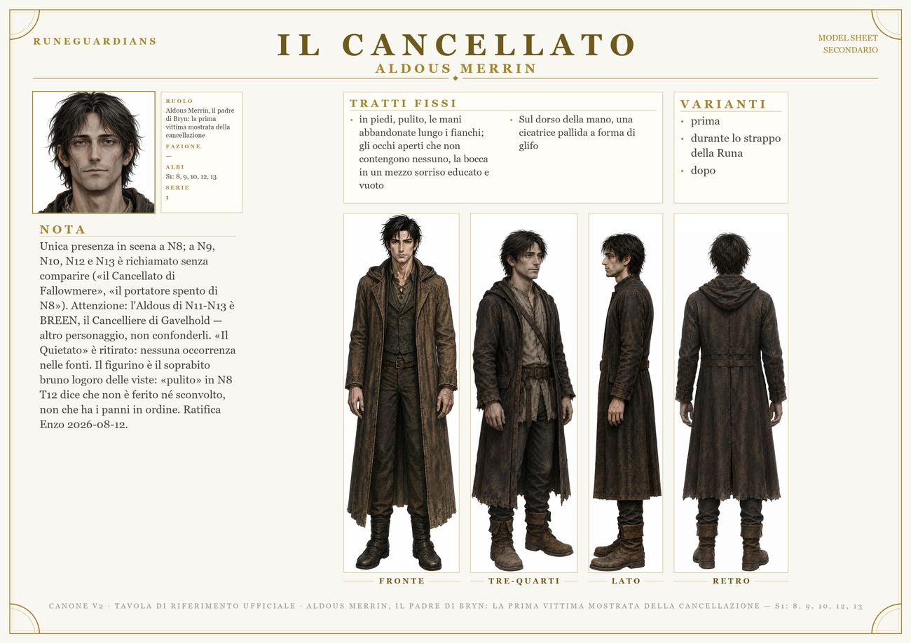
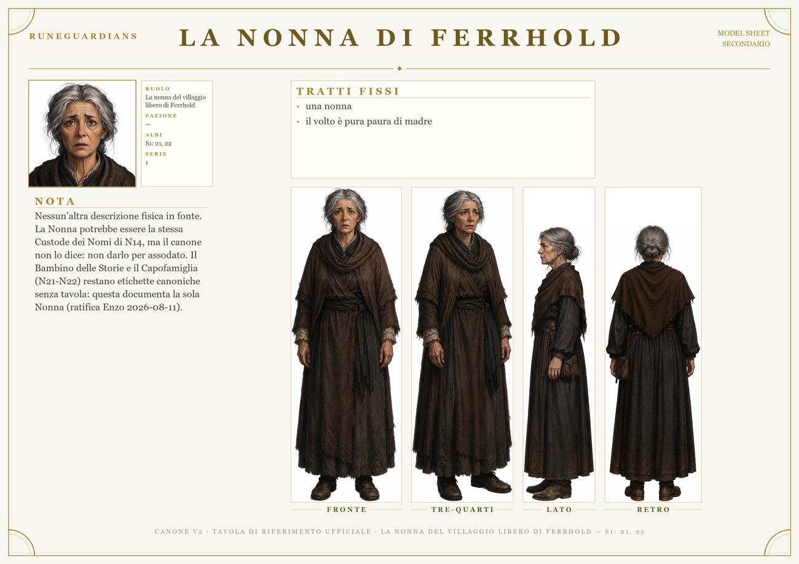
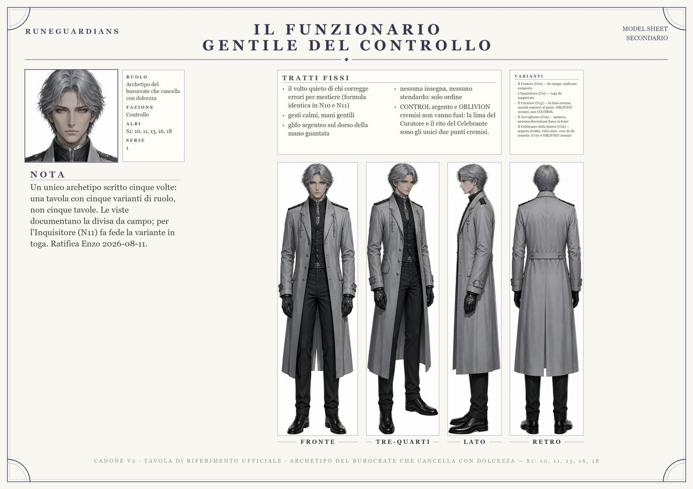
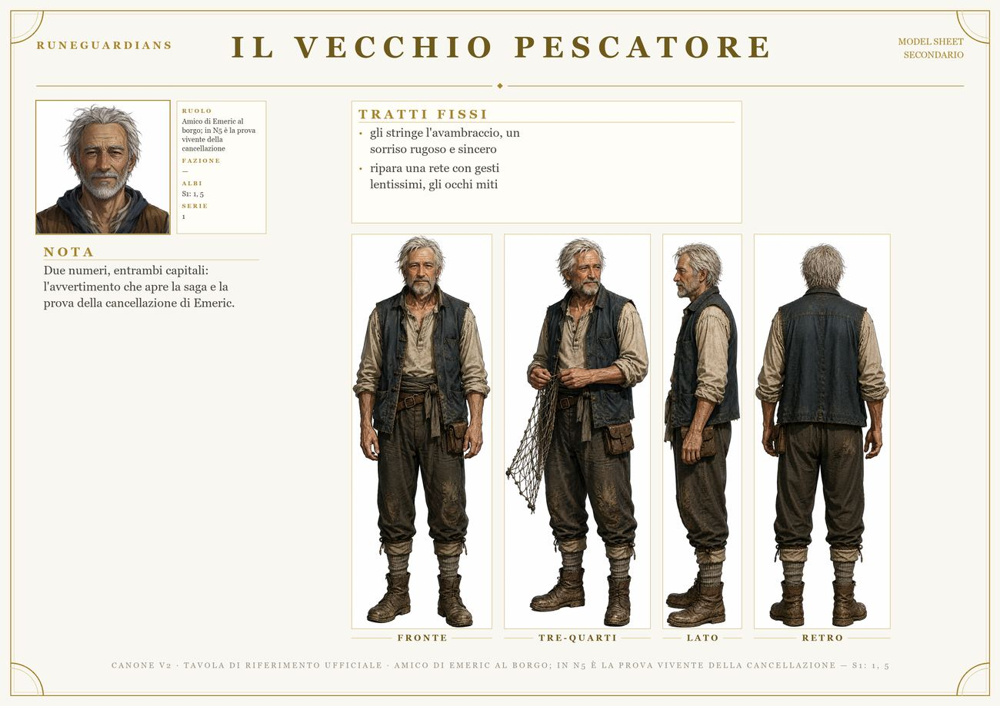

I Volti di Astralis
Il mondo non è fatto solo di Eredi: questi sono i volti che i Guardiani incontrano lungo la strada.

Lo Scriba di Archive CityScriba dell'Archivio: occhiali di corno, dita d'inchiostro

L'agente del Controllo in grigioEsecutore anonimo del Controllo

Il Cancellato / Aldous MerrinAldous Merrin, il padre di Bryn: la prima vittima mostrata della cancellazione

La Nonna di FerrholdLa nonna del villaggio libero di Ferrhold

Il funzionario gentile del ControlloArchetipo del burocrate che cancella con dolcezza
 Nerine / La Guardiana del faro
Nerine / La Guardiana del faroLa donna che crebbe Wren/Selene; ostaggio del ricatto di Milo Grey

Il Vecchio PescatoreAmico di Emeric al borgo; in N5 è la prova vivente della cancellazione